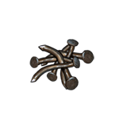

Получено: файл; исходный URL. Оригинальные байты с указанного зеркала; идентичность архивному файлу не проверена.
Гвозди
Мой Мир; историческая таблица, дата редакции не установлена- Тип
- нет данных
- Покупка
- 2 Зб; место покупки не указано
- Продажа
- 3 000 монет
- Как получить
- Произвести в Пирамиде Собрать "Очень страшную коллекцию" (ВКонтакте, ZOMBIA; требует сверки).
- Применение
- Участвует в строительстве: Волшебный кролик Башня Глаз-алмаз Мост
- Особенности
- нет данных
- Версия и дата
- Мой Мир; историческая таблица, дата редакции не установлена


Данные по источнику · Мой Мир · 20.06.2011
Предварительно: один источник; требует сверки. Требуется сверка.
- Покупка
- 2 зомбаксов (по источнику)
- Продажа
- 3 000 монет
- Применение
- Волшебный кролик, башня, глаз-алмаз, мост
- Получение · ЗомбиСити
- Очень страшная коллекция; изготовление в Пирамиде: 1 проволока + 1 шестерня; возможен подарок строителю.
- Применение · ЗомбиСити
- Супер-лопаты, мост, пристань на остров Любви, башня и другие постройки.
Данные по источнику · ВКонтакте, ZOMBIA · 27 Июня 2011, 21:39; дата редакции не установлена
Предварительно: Данные одной исторической фанатской страницы; цифры и подписи изображений требуют сверки. Описание и условия сохранены по колонкам без додумывания.. Требуется сверка.
- Описание материала
- Проволока 1000 монет 2 Зомбакса
- Участвует в строительстве
- нет текстовых данных; возможны неподписанные изображения
- Как достать
- Произвести в Пирамиде Собрать "Очень страшную коллекцию"
- Участвует в создании
- нет текстовых данных; возможны неподписанные изображения
Данные по источнику · браузерная социальная версия, ЗомбиСити / зеркало · дата редакции не установлена; дата в URL не гарантирует актуальность
Предварительно: Одна статья; сверка независимости и версий не завершена.. Требуется сверка.
Данные по источнику · браузерная версия; платформа не указана · дата редакции неизвестна
Предварительно: Подписи и последовательность пиктограмм перенесены без автоматического толкования. Названия, цены и направления стрелок требуют визуальной сверки; возможны ошибки самого сайта.. Требуется сверка.
- Колонка 1 в порядке пиктограмм
- [подпись: Гвозди; файл gvozdi.png] [подпись: Стоимость (Зомбаксов); файл zombucks.png] 2 [подпись: Продажа; файл moneta.png] 3000
- Колонка 2 в порядке пиктограмм
- [значок: proizvoditsya.png] [подпись: Пирамида; файл piramida.png]
- Колонка 3 в порядке пиктограмм
- [значок: stroit.png] [подпись: Волшебный Кролик; файл volshebny_krolik.png] [подпись: Башня; файл bashnya.png] [подпись: Мост; файл most.png] [подпись: Пристань на Остров Любви; файл ostrov@20lubvi.png]
- Колонка 4 в порядке пиктограмм
- [значок: sosdanie.png] [подпись: Лопаты; файл lopaty.png] [значок: strelka.png] [подпись: Глаз-алмаз; файл glaz-almaz.png]
- Колонка 5 в порядке пиктограмм
- [значок: poluchit.png] [подпись: Очень Страшная Коллекция; файл ochen_strashnaya.png]
Данные по источнику · браузерная Зомби Ферма / Зомби Мания; платформа требует проверки · дата URL не гарантирует дату редакции
Предварительно: Индивидуальная страница прочитана автоматически, подписи значков могут содержать ошибки; даты редакции и независимость от ЗомбиСити не установлены.. Требуется сверка.
- Основной блок страницы и подписи изображений
- Материал [иллюстрация: Гвозди] Гвозди Цена покупки: 2 [иллюстрация: Зомбаксы] Цена продажи: 3000 [иллюстрация: Монеты] Продать или купить Гвозди за ресурсы игры можно в разделе Обменка Зомби Фермы Гвозди в игре Зомби Ферма создать не сложно, ведь для изготовление Гвоздей нужны несложная постройка и бесплатные подарки от друзей. Гвозди очень часто применяются игроками в создании Супер-лопат для поиска кладов на фермах друзей. Гвозди даются за коллекцию: Очень страшная [иллюстрация: Очень страшная Коллекция] Гвозди можно создать в постройке Пирамида: Гвозди [иллюстрация: Гвозди] = 1 Проволока [иллюстрация: Проволока] + 1 Шестерня [иллюстрация: Шестерня] [иллюстрация: Стрелка] Пирамида [иллюстрация: Пирамида] Гвозди можно найти в ценностях: Подарок строителю [иллюстрация: Подарок строителю] Гвозди участвуют в создании: Супер-лопаты [иллюстрация: Супер-лопаты] Крыша [иллюстрация: Крыша] Гвозди нужны для строительства многих построек: 20 Плиток [иллюстрация: 20 Плиток] Мост [иллюстрация: Мост туристов] Остров Любви [иллюстрация: Остров Любви] Мост [иллюстрация: Мост] Башня [иллюстрация: Башня] Волшебный кролик [иллюстрация: Волшебный кролик] Стоунхендж [иллюстрация: Стоунхендж] Маленькая ёлочка [иллюстрация: Маленькая ёлочка] Пермь слева [иллюстрация: Пермь слева] Пермь справа [иллюстрация: Пермь справа] Хижина [иллюстрация: Хижина] Вишнёвый автомат [иллюстрация: Вишнёвый автомат] Тайная шахта [иллюстрация: Тайная шахта] Город-призрак [иллюстрация: Город-призрак] Изумрудная вышка [иллюстрация: Изумрудная вышка] Изумрудная стена [иллюстрация: Изумрудная стена] Изумрудная мельница [иллюстрация: Изумрудная мельница] Башня-призрак [иллюстрация: Башня-призрак] Стена-призрак [иллюстрация: Стена-призрак] Мельница-призрак [иллюстрация: Мельница-призрак] Ужасная мельница [иллюстрация: Ужасная мельница] Купол [иллюстрация: Купол] Цирк [иллюстрация: Цирк] Таверна [иллюстрация: Таверна] Дредноут 950 [иллюстрация: Дредноут 950] Дредноут [иллюстрация: Дредноут]
Текст источника без реконструкции
Участвует в строительстве: Волшебный кролик Башня Глаз-алмаз Мост
Связанные сущности
нет проверенных связей — требуется сверка.